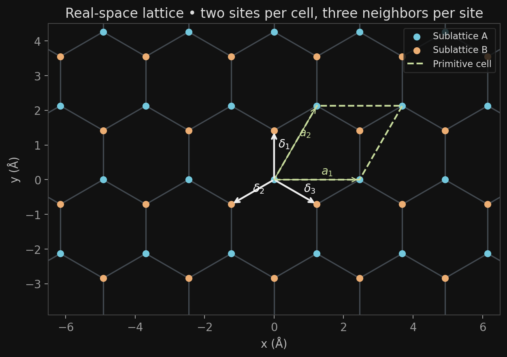
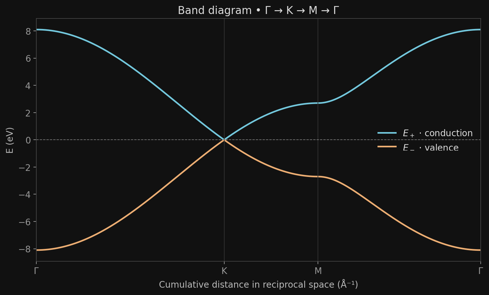
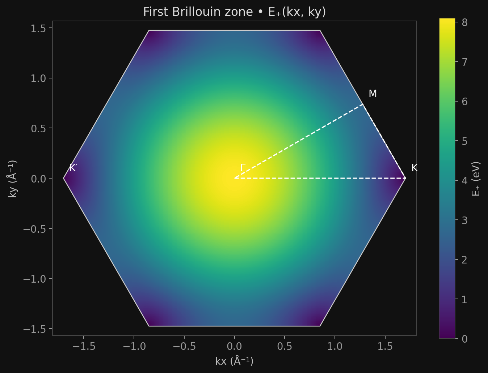
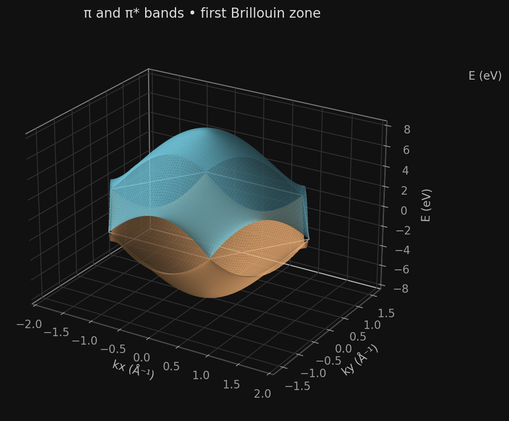
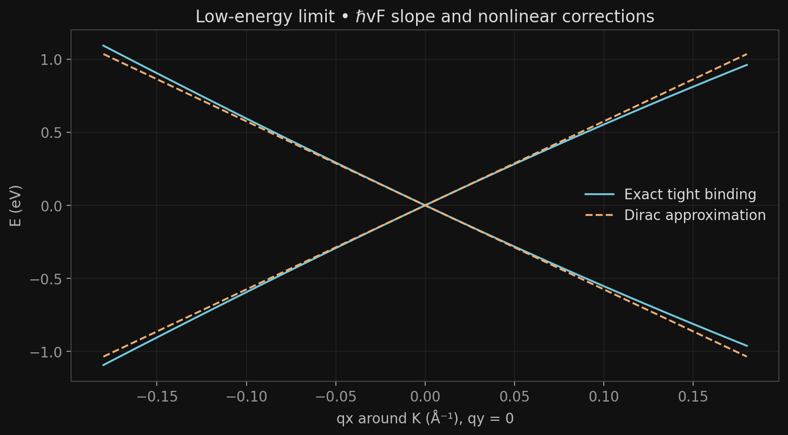

Graphene.
From the lattice to Dirac cones.
A complete derivation of the nearest-neighbor tight-binding model.
Two atoms per unit cell. Three hopping paths. Interference that closes the gap. The graphene spectrum emerges from this geometry, without assuming a Dirac equation at the outset.
This notebook connects lattice geometry, fermionic operators, the discrete Schrödinger equation, and band calculations. Python results accompany each representation, while a Three.js explorer lets you manipulate the lattice and both energy surfaces.
Geometry before equations
The colors distinguish sublattices A and B: both sites are still identical carbon atoms. Each unit cell contains one A site and one B site. The white arrows indicate the three neighbors of the A site at the origin.

A B Primitive cell · Drag: rotate · Scroll / pinch: zoom · Right-click / two fingers: pan
Convention, unit cell, and nearest neighbors
We denote the triangular Bravais lattice constant by \(a\), and the distance between neighboring carbon atoms by \(d\). This distinction is maintained throughout the equations, figures, and code.
The honeycomb lattice is not itself a Bravais lattice: it consists of a triangular lattice with a two-site basis.
\[\mathbf a_1=a(1,0),\qquad \mathbf a_2=a\left(\frac12,\frac{\sqrt3}{2}\right),\qquad \mathbf R=n\mathbf a_1+m\mathbf a_2.\] \[\boldsymbol\tau_A=(0,0),\qquad \boldsymbol\tau_B=\left(0,\frac{a}{\sqrt3}\right),\qquad \mathbf r_{R\alpha}=\mathbf R+\boldsymbol\tau_\alpha.\]From the A site in unit cell \(\mathbf R\), the neighboring B sites belong to cells \(\mathbf R\), \(\mathbf R-\mathbf a_2\), and \(\mathbf R+\mathbf a_1-\mathbf a_2\). Their bond vectors are therefore:
\[\begin{aligned}\boldsymbol\delta_1&=\boldsymbol\tau_B=\left(0,\frac{a}{\sqrt3}\right),\\ \boldsymbol\delta_2&=\boldsymbol\tau_B-\mathbf a_2=\left(-\frac a2,-\frac{a}{2\sqrt3}\right),\\ \boldsymbol\delta_3&=\boldsymbol\tau_B+\mathbf a_1-\mathbf a_2=\left(\frac a2,-\frac{a}{2\sqrt3}\right).\end{aligned}\] \[|\boldsymbol\delta_j|=d,\qquad \sum_{j=1}^3\boldsymbol\delta_j=0,\qquad A_c=|\mathbf a_1\times\mathbf a_2|=\frac{\sqrt3}{2}a^2.\]The cell shown is the parallelogram spanned by \(\mathbf a_1,\mathbf a_2\). The B basis site lies inside this cell; the three bonds starting from A are not all contained within the same cell.
The Brillouin zone
The reciprocal vectors are defined by \(\mathbf a_i\cdot\mathbf b_j=2\pi\delta_{ij}\). Solving the four relations gives:
\[\mathbf b_1=\frac{2\pi}{a}\left(1,-\frac1{\sqrt3}\right),\qquad \mathbf b_2=\frac{2\pi}{a}\left(0,\frac2{\sqrt3}\right).\]The first Brillouin zone is the Wigner–Seitz cell of the reciprocal lattice. Its six vertices are:
\[\left(\pm\frac{4\pi}{3a},0\right),\qquad \left(\pm\frac{2\pi}{3a},\pm\frac{2\pi}{\sqrt3a}\right).\]The signs in the second pair are independent. The six vertices form two valley classes modulo a reciprocal lattice vector. For the band diagram, we choose:
\[\Gamma=(0,0),\quad K=\left(\frac{4\pi}{3a},0\right),\quad K'=-K,\quad M=\frac{\mathbf b_1+\mathbf b_2}{2}=\left(\frac\pi a,\frac\pi{\sqrt3a}\right).\] \[A_{\mathrm{BZ}}=|\mathbf b_1\times\mathbf b_2|=\frac{(2\pi)^2}{A_c}=\frac{8\pi^2}{\sqrt3a^2}.\]The path \(\Gamma\to K\to M\to\Gamma\) passes through the center, a vertex, and the midpoint of the adjacent edge. The horizontal coordinate in the diagram is the cumulative length along this path, rather than \(k_x\) alone.
Projecting the Schrödinger equation
In planar graphene, the \(\sigma\) bonds arise from sp² hybridization. One \(p_z\) orbital per carbon provides the \(\pi\) and \(\pi^*\) bands relevant near the Fermi level. We retain only this orbital basis, with an independent spin degree of freedom.
\[\hat h=\frac{\hat{\mathbf p}^{\,2}}{2m_e}+V_{\mathrm{crystal}}(\mathbf r),\qquad \hat h|\psi\rangle=E|\psi\rangle.\] \[|\psi\rangle=\sum_{R,\alpha\in\{A,B\}}c_{R\alpha}|R,\alpha\rangle.\]Left-multiplying by \(\langle R,\alpha|\) generally produces a generalized eigenvalue problem:
\[\sum_{R'\beta}h_{R\alpha,R'\beta}c_{R'\beta}=E\sum_{R'\beta}S_{R\alpha,R'\beta}c_{R'\beta},\] \[h_{ij}=\langle i|\hat h|j\rangle,\qquad S_{ij}=\langle i|j\rangle.\]The orthogonal tight-binding model approximates \(S_{ij}=\delta_{ij}\). It retains an identical on-site energy \(\varepsilon_0\) on A and B, and a single intersite matrix element between nearest neighbors:
\[h_{ii}=\varepsilon_0,\qquad h_{ij}=-t\;\;(i,j\text{ nearest neighbors}),\qquad h_{ij}=0\text{ otherwise},\quad t>0.\]The sign \(-t\) is a hopping convention; \(t\) is an effective parameter, not a value calculated here from atomic orbitals. We then set \(\varepsilon_0=0\) to measure energies relative to the band-touching point.
The Hamiltonian in operator form
\(\hat a_{Rs}\) and \(\hat b_{Rs}\) annihilate an electron with spin \(s\) in the A and B orbitals of unit cell \(R\). Their adjoints create that electron. The operators obey the fermionic anticommutation relations:
\[\{\hat a_{Rs},\hat a^\dagger_{R's'}\}=\{\hat b_{Rs},\hat b^\dagger_{R's'}\}=\delta_{RR'}\delta_{ss'},\qquad \{\hat a_{Rs},\hat b^\dagger_{R's'}\}=0.\]All anticommutators between two annihilation operators, two creation operators, or different species vanish. For a one-particle operator, second quantization gives \(\hat H=\sum_{ij,s}h_{ij}\hat c^\dagger_{is}\hat c_{js}\). Here:
Each bond is listed exactly once from its A site. The Hermitian conjugate describes the reverse hop; neither a factor of \(1/2\) nor another sum counting the same bonds should be added.
Without interactions, the operator description and the one-particle Schrödinger equation have the same spectrum. We omit spin in the following steps, then reintroduce it when counting states.
Amplitudes on the two sublattices
\[|\psi\rangle=\sum_R\left[A_R\hat a_R^\dagger+B_R\hat b_R^\dagger\right]|0\rangle.\]Applying \(\hat H|\psi\rangle=E|\psi\rangle\) and matching the coefficients of each localized state gives:
\[\begin{aligned}(E-\varepsilon_0)A_R&=-t\left(B_R+B_{R-a_2}+B_{R+a_1-a_2}\right),\\ (E-\varepsilon_0)B_R&=-t\left(A_R+A_{R+a_2}+A_{R-a_1+a_2}\right).\end{aligned}\]The reversed displacements in the second equation come from B → A hopping. For a periodic crystal, the Bloch ansatz in the cell gauge is:
\[A_R=\frac{e^{i\mathbf k\cdot\mathbf R}}{\sqrt N}u_A(\mathbf k),\qquad B_R=\frac{e^{i\mathbf k\cdot\mathbf R}}{\sqrt N}u_B(\mathbf k).\]For example, \(B_{R-a_2}=e^{ik\cdot R}e^{-ik\cdot a_2}u_B/\sqrt N\). Factoring out the common phase gives the two equations:
\[(E-\varepsilon_0)u_A=-t f(\mathbf k)u_B,\qquad (E-\varepsilon_0)u_B=-t f^*(\mathbf k)u_A,\]The three contributions are the three hopping paths. The zeros of their complex sum are the points where the coupling between the two Bloch amplitudes vanishes.
Fourier transform and phase convention
The cell gauge
For \(N\) unit cells with periodic boundary conditions, we define:
\[\hat a_R=\frac1{\sqrt N}\sum_k e^{ik\cdot R}\hat a_k,\qquad \hat b_R=\frac1{\sqrt N}\sum_k e^{ik\cdot R}\hat b_k,\qquad \hat a_k=\frac1{\sqrt N}\sum_R e^{-ik\cdot R}\hat a_R.\]The orthogonality relation \(\sum_R e^{i(k'-k)\cdot R}=N\delta_{kk'}\) ensures conservation of crystal momentum. For a unit-cell displacement \(\boldsymbol\Delta\):
\[\begin{aligned}\sum_R\hat a_R^\dagger\hat b_{R+\Delta} &=\frac1N\sum_{R,k,k'}e^{-ik\cdot R}e^{ik'\cdot(R+\Delta)}\hat a_k^\dagger\hat b_{k'}\\ &=\sum_k e^{ik\cdot\Delta}\hat a_k^\dagger\hat b_k.\end{aligned}\]The displacements \(0,-a_2,a_1-a_2\) reproduce \(f\) exactly. Defining \(\hat\Psi_k=(\hat a_k,\hat b_k)^T\):
\[\hat H=\sum_k\hat\Psi_k^\dagger H_c(k)\hat\Psi_k,\qquad H_c(k)=\begin{pmatrix}\varepsilon_0&-tf(k)\\-tf^*(k)&\varepsilon_0\end{pmatrix}.\]The atomic gauge
We can include the position of atom B in its Fourier phase: \(\hat b_R=N^{-1/2}\sum_k e^{ik\cdot(R+\tau_B)}\widetilde b_k\). Then:
\[g(k)=\sum_j e^{ik\cdot\delta_j}=e^{ik\cdot\tau_B}f(k),\qquad H_a(k)=\begin{pmatrix}\varepsilon_0&-tg(k)\\-tg^*(k)&\varepsilon_0\end{pmatrix}.\] \[U(k)=\operatorname{diag}(1,e^{ik\cdot\tau_B}),\qquad \Psi_c=U\Psi_a,\qquad H_a=U^\dagger H_cU.\]The matrices are related by a unitary transformation. The spinor components and their relative phase change, but \(|g|=|f|\), so the bands remain identical. In the cell gauge, \(f(k+G)=f(k)\) for any reciprocal vector \(G\).
Diagonalizing the 2 × 2 block
The Hamiltonian is Hermitian. Its eigenvalues satisfy:
\[\det[H_c-EI]=(\varepsilon_0-E)^2-t^2 f f^*=0.\]To obtain an explicit real expression, the two nonconstant exponentials can be combined:
\[\begin{aligned}f(k)&=1+e^{-i(ak_x/2+\sqrt3ak_y/2)}+e^{i(ak_x/2-\sqrt3ak_y/2)}\\ &=1+2\cos\left(\frac{ak_x}{2}\right)e^{-i\sqrt3ak_y/2}.\end{aligned}\]Writing \(c=\cos(ak_x/2)\) and \(\phi=\sqrt3ak_y/2\), we have \((1+2ce^{-i\phi})(1+2ce^{i\phi})=1+4c^2+4c\cos\phi\). Therefore:
\[E_\pm=\varepsilon_0\pm t\sqrt{1+4\cos^2\left(\frac{ak_x}{2}\right)+4\cos\left(\frac{ak_x}{2}\right)\cos\left(\frac{\sqrt3ak_y}{2}\right)}.\]Checks at high-symmetry points
At \(\Gamma\), all phases are equal and \(f=3\). At \(K\), \(ak_x/2=2\pi/3\), so \(f=1+2(-1/2)=0\). At \(M\), \(ak_x/2=\pi/2\), so \(f=1\). The same zero occurs at \(K'\), since \(f(-k)=f^*(k)\).
| Point | f(k) | E− (eV) | E+ (eV) | Interpretation |
|---|---|---|---|---|
| Γ | 3 | −8.10 | +8.10 | Global extrema |
| K, K′ | 0 | 0 | 0 | Band touching |
| M | 1 | −2.70 | +2.70 | Saddle points |
These values use \(\varepsilon_0=0\) and \(t=2.7\) eV. The full spectrum lies between \(-3t\) and \(+3t\); its total width is \(6t=16.2\) eV.
Spinors, pseudospin, and symmetries
For \(f\ne0\), write \(f=\rho e^{i\theta}\). Labeling the two bands by \(\lambda=\pm1\), the equation \(-tfu_B=\lambda t\rho u_A\) gives:
\[u_\lambda(k)=\frac1{\sqrt2}\begin{pmatrix}1\\-\lambda e^{-i\theta(k)}\end{pmatrix},\qquad E_\lambda=\varepsilon_0+\lambda t\rho.\]The states have probability \(1/2\) on each sublattice. Their relative phase encodes the pseudospin direction; pseudospin describes A/B and does not represent the electron’s real spin.
\[H_c-\varepsilon_0I=d_x\sigma_x+d_y\sigma_y,\qquad d_x=-t\operatorname{Re}f,\quad d_y=t\operatorname{Im}f,\quad d_z=0.\] \[\langle\boldsymbol\sigma\rangle_\lambda=\lambda\frac{(d_x,d_y,0)}{t|f|}.\]At K and K′, \(\rho=0\), and the block equals \(\varepsilon_0I\): any normalized combination is an eigenstate and \(\theta\) is undefined. The expression above therefore applies away from the degeneracy points.
Why the bands are symmetric
\[\{\sigma_z,H_c-\varepsilon_0I\}=0.\]This sublattice symmetry, called chiral symmetry, pairs every energy \(E-\varepsilon_0\) with its opposite. Hopping connects A exclusively to B. Real hopping amplitudes also ensure \(H_c(-k)=H_c(k)^*\), hence \(E_\lambda(-k)=E_\lambda(k)\).
Winding and Berry phase
In the chosen gauge, along a closed contour that avoids degeneracies:
\[\mathcal A_\lambda(k)=i u_\lambda^\dagger\nabla_k u_\lambda=\frac12\nabla_k\theta,\qquad \gamma_\lambda=\oint\mathcal A_\lambda\cdot d k=\frac12\Delta\theta.\]Around a single valley, the phase of \(f\) winds once. The Berry phase is therefore \(\pi\) modulo \(2\pi\), with opposite winding at the two valleys. This is the local Dirac limit; the connection depends on the basis choice, while the physical phase must be evaluated using a consistent Bloch convention.
The Dirac equation emerges from the lattice
Write \(k=K_\xi+q\), with \(K_\xi=\xi K\) and \(\xi=+1\) for K, \(-1\) for K′. The continuum regime requires \(a|q|\ll1\). We expand \(f\), rather than energy alone, to preserve the spinor structure.
\[\partial_{k_x}f=-a\sin\left(\frac{ak_x}{2}\right)e^{-i\sqrt3ak_y/2},\qquad \partial_{k_y}f=-i\sqrt3a\cos\left(\frac{ak_x}{2}\right)e^{-i\sqrt3ak_y/2}.\] \[f(K_\xi)=0,\qquad \left.\partial_{k_x}f\right|_{K_\xi}=-\xi\frac{\sqrt3a}{2},\qquad \left.\partial_{k_y}f\right|_{K_\xi}=i\frac{\sqrt3a}{2}.\] \[f(K_\xi+q)=\frac{\sqrt3a}{2}(-\xi q_x+iq_y)+O(a^2|q|^2).\]Substituting this expansion into the off-diagonal entries gives:
The cone is isotropic to first order; lattice corrections restore angular dependence at higher energies. No mass appears because the on-site energies on A and B are identical.
Real-space form and time dependence
For a slowly varying envelope, \(q\to-i\nabla\). Removing the common time-dependent phase associated with \(\varepsilon_0\), the equation becomes:
\[i\hbar\partial_t\psi_\xi(\mathbf r,t)=-i\hbar v_F(\xi\sigma_x\partial_x+\sigma_y\partial_y)\psi_\xi(\mathbf r,t).\]This is a massless Dirac equation in two dimensions, with \(v_F\) replacing the speed of light. The envelope has two A/B components; valley and real spin provide additional indices.
What would a mass term mean?
If the on-site energies became \(\varepsilon_A=\varepsilon_0+\Delta\) and \(\varepsilon_B=\varepsilon_0-\Delta\), we would add \(\Delta\sigma_z\). The spectrum would be \(\varepsilon_0\pm\sqrt{t^2|f|^2+\Delta^2}\), with a gap of \(2|\Delta|\). This term is set to zero in the pristine graphene simulated here.
Velocity, filling, and density of states
Fermi velocity and group velocity
\[v_F=\frac{(\sqrt3/2)(2.46\times10^{-10}\;\mathrm m)(2.7\;\mathrm{eV})}{6.582119569\times10^{-16}\;\mathrm{eV\,s}}\simeq8.74\times10^5\;\mathrm{m/s}.\]For a nondegenerate band, the group velocity is:
\[\mathbf v_\lambda(k)=\frac1\hbar\nabla_k E_\lambda=\frac{\lambda t}{\hbar}\frac{\operatorname{Re}[f^*\nabla_k f]}{|f|}.\]Near a valley, \(\mathbf v_\lambda\simeq\lambda v_F\,\mathbf q/|\mathbf q|\). Exactly at the touching point, the cone’s directional derivative does not define a unique velocity vector.
Neutral graphene is a semimetal
There are two orbitals per unit cell, two bands per spin, and two spin states. Each carbon contributes one pz electron, giving two electrons per unit cell: at zero temperature, the valence band is filled and the conduction band is empty. The chemical potential of the neutral model is \(\mu=\varepsilon_0\).
The bands touch at the valleys. There is neither a band gap nor an extended Fermi surface at neutrality: in the ideal limit, the density of states vanishes at the touching point.
Density of states in the Dirac limit
Per unit area, a circular region of radius \(q\) contains \(g\pi q^2/(2\pi)^2=gq^2/(4\pi)\) conduction states. The factor \(g=g_sg_v=2\times2=4\) counts spin and the two valleys; the six zone vertices must not be counted again.
\[n_+(E)=\frac{g(E-\varepsilon_0)^2}{4\pi(\hbar v_F)^2},\qquad D(E)=\frac{g|E-\varepsilon_0|}{2\pi(\hbar v_F)^2}.\]This expression holds near neutrality. In the full spectrum, the saddle points at M produce van Hove singularities at \(E=\varepsilon_0\pm t\); a purely linear description does not capture them.
From the analytical result to Python calculations
The program uses NumPy to construct and diagonalize the \(H(k)\) blocks, and Matplotlib for the 2D and 3D figures. The images below are outputs of the included script, with \(a=2.46\) Å, \(t=2.7\) eV, and \(\varepsilon_0=0\).
Band diagram

Band touching at K follows from the vanishing structure factor, rather than a correction imposed on the plot. The standard path contains K; K′ is tested separately in the code.
2D map in the first zone

A Cartesian grid does not necessarily contain every K vertex. The exact zero is therefore verified by evaluating their coordinates directly, independently of image resolution.
Both energy surfaces

Where the Dirac approximation stops being exact

Numerical checks
The script fails immediately if any of these checks fails: Hermiticity, reciprocal orthogonality, bond distances, gauge equivalence, periodicity, k → −k inversion, high-symmetry energies, or the Dirac slope. It also compares the closed-form expression with numpy.linalg.eigvalsh at 200 reproducible points.
Numerical checks passed. Values and precision are recorded in results.json.
The complete Python code
The calculation runs locally. The website displays precomputed images, while the JavaScript explorer recalculates the same analytical dispersion when t changes. No Python backend is required to host this page.
python -m pip install -r devlog/graphene/requirements.txt
python devlog/graphene/simulate.py
# A finer grid and a custom output directory:
python devlog/graphene/simulate.py --grid 601 --output results/graphene
# Preview the website from the portfolio root:
python -m http.server 8000
# http://localhost:8000/devlog/graphene-tight-binding.htmlWith no options, figures and data are written to assets/devlog_graphene/. The functions structure_factor, hamiltonian and energies also accept arrays of k points.
Show the complete script · NumPy + Matplotlib
"""Monolayer graphene, orthogonal nearest-neighbor tight binding.
Run: python devlog/graphene/simulate.py
Units: lengths in Å, k in Å⁻¹, energies in eV. No web backend required.
"""
from pathlib import Path
import argparse
import json
import numpy as np
import matplotlib
matplotlib.use("Agg")
import matplotlib.pyplot as plt
from matplotlib.path import Path as MplPath
A = 2.46
T = 2.7
HBAR_EV_S = 6.582119569e-16
SQRT3 = np.sqrt(3.0)
A1 = A * np.array([1.0, 0.0])
A2 = A * np.array([0.5, SQRT3 / 2])
TAU_B = np.array([0.0, A / SQRT3])
DELTA = np.array([TAU_B, TAU_B - A2, TAU_B + A1 - A2])
B1 = 2 * np.pi / A * np.array([1.0, -1.0 / SQRT3])
B2 = 2 * np.pi / A * np.array([0.0, 2.0 / SQRT3])
GAMMA = np.zeros(2)
K = np.array([4 * np.pi / (3 * A), 0.0])
KP = -K
M = (B1 + B2) / 2
BZ = np.array([[4*np.pi/(3*A), 0], [2*np.pi/(3*A), 2*np.pi/(SQRT3*A)],
[-2*np.pi/(3*A), 2*np.pi/(SQRT3*A)], [-4*np.pi/(3*A), 0],
[-2*np.pi/(3*A), -2*np.pi/(SQRT3*A)], [2*np.pi/(3*A), -2*np.pi/(SQRT3*A)]])
def structure_factor(k):
"""f(k) in the cell gauge; accepts (..., 2)."""
k = np.asarray(k)
return 1 + np.exp(-1j * (k @ A2)) + np.exp(1j * (k @ (A1 - A2)))
def hamiltonian(k, t=T, epsilon0=0.0):
f = structure_factor(k)
h = np.zeros(f.shape + (2, 2), dtype=complex)
h[..., 0, 0] = h[..., 1, 1] = epsilon0
h[..., 0, 1] = -t * f
h[..., 1, 0] = -t * f.conj()
return h
def energies(k, t=T):
positive = t * np.abs(structure_factor(k))
return np.stack((-positive, positive), axis=-1)
def symmetry_path(samples=250):
points = [GAMMA, K, M, GAMMA]
pieces = [np.linspace(p, q, samples, endpoint=False) for p, q in zip(points[:-1], points[1:])]
k = np.concatenate(pieces + [np.array([GAMMA])])
s = np.r_[0, np.cumsum(np.linalg.norm(np.diff(k, axis=0), axis=1))]
return k, s, s[[0, samples, 2*samples, 3*samples]]
def validate():
rng = np.random.default_rng(42)
k = rng.uniform(-2, 2, (200, 2))
h = hamiltonian(k)
assert np.allclose(h, h.conj().swapaxes(-1, -2))
assert np.allclose(np.linalg.eigvalsh(h), energies(k), atol=1e-12)
assert np.allclose(np.linalg.norm(DELTA, axis=1), A/SQRT3)
assert np.allclose(np.array([A1, A2]) @ np.array([B1, B2]).T, 2*np.pi*np.eye(2))
f_atom = np.exp(1j * (k @ DELTA.T)).sum(axis=-1)
assert np.allclose(f_atom, np.exp(1j*(k @ TAU_B))*structure_factor(k))
assert np.allclose(energies(k + B1), energies(k))
assert np.allclose(energies(k + B2), energies(k))
assert np.allclose(energies(-k), energies(k))
for name, point, expected in [("Gamma", GAMMA, 3*T), ("K", K, 0), ("Kprime", KP, 0), ("M", M, T)]:
assert np.isclose(energies(point)[1], expected, atol=1e-12), name
c = SQRT3*A/2
for xi in [-1, 1]:
q = np.array([1e-7, -2e-7])
approx = c * (-xi*q[0] + 1j*q[1])
assert np.allclose(structure_factor(xi*K+q), approx, atol=1e-12)
# Isotropic slope in the small-q limit; excludes the degeneracy itself.
angles = np.linspace(0, 2*np.pi, 100, endpoint=False)
q = 1e-5 * np.column_stack((np.cos(angles), np.sin(angles)))
slope = energies(K+q)[:, 1] / np.linalg.norm(q, axis=1)
assert np.allclose(slope, c*T, rtol=1e-5)
return {"a_angstrom": A, "d_CC_angstrom": A/SQRT3, "t_eV": T,
"v_F_m_s": c*T*1e-10/HBAR_EV_S,
"points_eV": {n: energies(p).tolist() for n, p in [("Gamma", GAMMA), ("K", K), ("Kprime", KP), ("M", M)]},
"eigensolver_max_error_eV": float(np.max(np.abs(np.linalg.eigvalsh(h)-energies(k)))),
"validation": "passed"}
def style():
plt.rcParams.update({"figure.facecolor": "#111111", "axes.facecolor": "#111111",
"text.color": "#dddddd", "axes.labelcolor": "#bbbbbb", "xtick.color": "#999999",
"ytick.color": "#999999", "axes.edgecolor": "#444444", "grid.color": "#333333",
"font.family": "DejaVu Sans", "font.size": 11, "savefig.facecolor": "#111111"})
def save(fig, output, name):
fig.savefig(output / (name + ".png"), dpi=180, bbox_inches="tight")
plt.close(fig)
def plot_lattice(output):
fig, ax = plt.subplots(figsize=(10, 5.2))
cells = {(n,m): n*A1+m*A2 for n in range(-4,5) for m in range(-4,5)}
for (n,m), r in cells.items():
for offset in [(0,0), (0,-1), (1,-1)]:
key = (n+offset[0], m+offset[1])
if key in cells:
end = cells[key]+TAU_B
ax.plot(*np.array([r,end]).T, color="#424950", lw=1.3, zorder=1)
points = np.array(list(cells.values()))
ax.scatter(*points.T, s=35, color="#73c8dd", label="Sublattice A", zorder=2)
ax.scatter(*(points+TAU_B).T, s=35, color="#edae73", label="Sublattice B", zorder=2)
cell = np.array([GAMMA,A1,A1+A2,A2,GAMMA])
ax.plot(*cell.T, "--", color="#c7db9c", lw=1.7, label="Primitive cell")
for i,d in enumerate(DELTA):
ax.annotate("", xy=d, xytext=GAMMA, arrowprops={"arrowstyle":"->","color":"#eeeeee","lw":1.8})
ax.text(*(d*0.6 + [0.12,0.08]), rf"$\delta_{i+1}$", color="white")
for label,v in [(r"$a_1$",A1),(r"$a_2$",A2)]:
ax.annotate("", xy=v, xytext=[0,0], arrowprops={"arrowstyle":"->","color":"#c7db9c"})
ax.text(*(v*0.52 + [0.08,0.15]), label, color="#c7db9c")
ax.set(xlim=(-6.5,6.5),ylim=(-3.9,4.5),xlabel="x (Å)",ylabel="y (Å)",title="Real-space lattice • two sites per cell, three neighbors per site")
ax.set_aspect("equal"); ax.legend(loc="upper right", facecolor="#111111",edgecolor="#333333",fontsize=9)
save(fig,output,"lattice")
def plot_bands(output):
k, s, ticks = symmetry_path()
e = energies(k)
fig, ax = plt.subplots(figsize=(10,5.5))
ax.plot(s,e[:,1],color="#73c8dd",lw=2,label=r"$E_+$ · conduction")
ax.plot(s,e[:,0],color="#edae73",lw=2,label=r"$E_-$ · valence")
for tick in ticks: ax.axvline(tick,color="#333333",lw=0.8)
ax.axhline(0,color="#777777",ls="--",lw=0.8)
ax.set(xticks=ticks,xticklabels=[r"$\Gamma$","K","M",r"$\Gamma$"],ylabel="E (eV)",xlabel="Cumulative distance in reciprocal space (Å⁻¹)",title="Band diagram • Γ → K → M → Γ")
ax.legend(frameon=False); ax.set_xlim(s[0],s[-1]); save(fig,output,"bands")
np.savetxt(output/"bands.csv", np.column_stack((s,k,e)),delimiter=",",header="path_Ainv,kx_Ainv,ky_Ainv,Eminus_eV,Eplus_eV",comments="")
def reciprocal_grid(n):
x=np.linspace(-K[0]*1.06,K[0]*1.06,n)
y=np.linspace(-B2[1]/2*1.06,B2[1]/2*1.06,n)
xx,yy=np.meshgrid(x,y)
kk=np.stack((xx,yy),axis=-1)
inside=MplPath(np.vstack((BZ,BZ[0]))).contains_points(kk.reshape(-1,2),radius=1e-10).reshape(xx.shape)
ep=energies(kk)[...,1]
return xx,yy,np.where(inside,ep,np.nan)
def plot_maps(output,n):
xx,yy,ep=reciprocal_grid(n)
fig,ax=plt.subplots(figsize=(9,6.4))
im=ax.pcolormesh(xx,yy,ep,cmap="viridis",shading="auto",vmin=0,vmax=3*T)
edge=np.vstack((BZ,BZ[0])); ax.plot(*edge.T,color="#cccccc",lw=1)
ax.plot(*np.array([GAMMA,K,M,GAMMA]).T,"w--",lw=1.3,label="Γ → K → M → Γ")
for name,p in [("Γ",GAMMA),("K",K),("K′",KP),("M",M)]: ax.annotate(name,p,xytext=(6,8),textcoords="offset points",color="white")
ax.set_aspect("equal"); ax.set(xlabel="kx (Å⁻¹)",ylabel="ky (Å⁻¹)",title="First Brillouin zone • E₊(kx, ky)")
fig.colorbar(im,ax=ax,label="E₊ (eV)"); save(fig,output,"energy-map")
fig=plt.figure(figsize=(10,7)); ax=fig.add_subplot(111,projection="3d")
ax.plot_surface(xx,yy,ep,color="#73c8dd",alpha=0.85,linewidth=0,rcount=110,ccount=110)
ax.plot_surface(xx,yy,-ep,color="#edae73",alpha=0.85,linewidth=0,rcount=110,ccount=110)
ax.plot(edge[:,0],edge[:,1],np.zeros(len(edge)),color="#999999",lw=1)
ax.set(xlabel="kx (Å⁻¹)",ylabel="ky (Å⁻¹)",zlabel="E (eV)",title="π and π* bands • first Brillouin zone")
ax.view_init(elev=24,azim=-58); ax.set_box_aspect((1.3,1,0.85))
fig.text(0.88,0.77,"E (eV)",color="#bbbbbb",fontsize=11)
for axis in [ax.xaxis,ax.yaxis,ax.zaxis]: axis.pane.fill=False
save(fig,output,"dispersion-3d")
def plot_dirac(output):
q=np.linspace(-0.18,0.18,501)
exact=energies(K+np.column_stack((q,np.zeros_like(q))))
linear=SQRT3*A*T/2*np.abs(q)
fig,ax=plt.subplots(figsize=(10,5))
ax.plot(q,exact[:,1],color="#73c8dd",label="Exact tight binding")
ax.plot(q,exact[:,0],color="#73c8dd")
ax.plot(q,linear,"--",color="#edae73",label="Dirac approximation")
ax.plot(q,-linear,"--",color="#edae73")
ax.set(xlabel="qx around K (Å⁻¹), qy = 0",ylabel="E (eV)",title="Low-energy limit • ℏvF slope and nonlinear corrections")
ax.grid(alpha=0.4); ax.legend(frameon=False); save(fig,output,"dirac-limit")
def main():
parser=argparse.ArgumentParser(description=__doc__)
parser.add_argument("--output",type=Path,default=Path(__file__).resolve().parents[2]/"assets/devlog_graphene")
parser.add_argument("--grid",type=int,default=361)
args=parser.parse_args()
if args.grid<51: parser.error("--grid must be at least 51")
metrics=validate(); args.output.mkdir(parents=True,exist_ok=True); style()
plot_lattice(args.output); plot_bands(args.output); plot_maps(args.output,args.grid); plot_dirac(args.output)
(args.output/"results.json").write_text(json.dumps(metrics,indent=2,ensure_ascii=False)+"\n",encoding="utf-8")
print(json.dumps(metrics,indent=2,ensure_ascii=False))
if __name__ == "__main__":
main()
What this model explains
The calculation starts with discrete geometry and reveals Dirac excitations at low energy. The gap closes through interference between the three hopping paths; the two-component structure comes directly from the A/B basis.
Beyond this first study, next-nearest-neighbor hopping can break electron–hole symmetry, an A/B contrast can open a gap, and edges can create states absent from the periodic model. Interactions, spin–orbit effects, strain, and multilayers require additional terms. Quantitative comparison over a broad energy range would also require more parameters or an ab initio calculation.
The finite patch shown in Three.js is used to inspect the geometry. The spectrum presented here belongs to an infinite periodic crystal; it is not the spectrum of a finite flake with edge states.
References and tools
- A. H. Castro Neto et al., The electronic properties of graphene, Rev. Mod. Phys. 81, 109 (2009). General reference for the π bands and Dirac description.
- Three.js — Installation and OrbitControls. Three.js r180, distributed under its MIT license.
- NumPy — eigvalsh and Matplotlib — plot_surface.
Derivation and calculations use the convention stated here. Figures are generated by the included script. The structure factor, its phases, and the valley coordinates are fixed together.